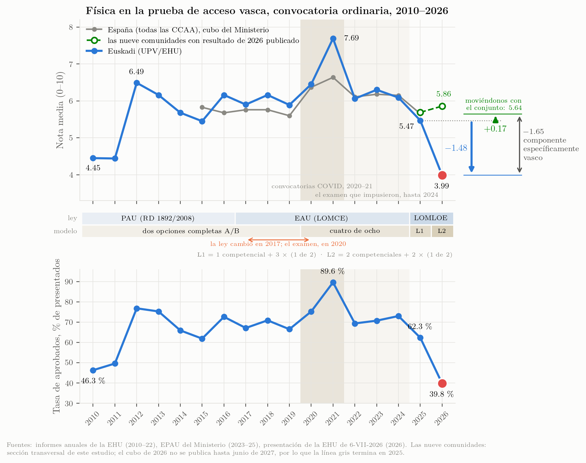
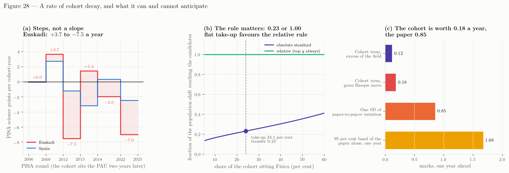

Informe para la Dirección de Acceso
PAU Física 2026 en la UPV/EHU: de qué está hecha la caída, qué puede y qué no puede separarse, y qué implica para la prueba de 2027
La media vasca de Física cayó a 3.99 en junio de 2026. De esa caída, la parte que es propia de Euskadi — medida contra las nueve comunidades que han publicado un resultado de 2026 — son 1.65 puntos, y toda ella en un solo año. Dos componentes pueden cuantificarse, cada uno como diferencia respecto del conjunto: la elección retirada de la prueba por encima de lo que retiraron otras comunidades (unos \(-0.20\)) y el descenso de la cohorte vasca en exceso sobre el de España, medido fuera del sistema vasco (unos \(-0.12\)). Las cuatro quintas partes restantes no pueden atribuirse a nada con los datos publicados, porque el contenido de la prueba, la carga de lectura, la severidad de la corrección y los temas examinados por primera vez dejan la misma huella en una media. Separarlos exige notas por subapartado y por tribunal, que la EHU tiene y no ha publicado. Y un año antes, en 2024, la distribución vasca ya había cambiado de forma — la banda alta cayó seis puntos más de lo que el nivel implicaba mientras la tasa de aprobados subía 2.3 puntos donde el nivel predecía una caída de 2.8 —, el segundo movimiento interanual más negativo de los 170 del panel nacional, y en la última prueba del formato antiguo.
Tres cosas más que esta ronda ha establecido. Más de la mitad de lo que separa a Euskadi del conjunto no es de Física: en el panel equilibrado por materias, la Física vasca queda \(2.28\) puntos por debajo de lo que hizo la Física de las cuatro comunidades de comparación, y esa distancia se divide en \(-1.18\) que movió a la vez a todas las materias cuantitativas de Euskadi — Matemáticas II cayó 1.67 — y \(-1.10\) que es solo de Física. Una severidad general de corrección no puede ser la causa principal, porque Lengua Castellana subió \(+0.03\) y Biología \(+0.15\) con los mismos tribunales; una severidad limitada a las penalizaciones numéricas sí encaja con el patrón, y un recuento de las hojas de corrección lo zanjaría. No puede proyectarse ninguna tasa de decaimiento de cohorte: la variación de PISA por año de cohorte va de \(+3.7\) a \(-7.5\), de modo que es una sucesión de escalones y no una pendiente, y la cohorte vale alrededor de un quinto de punto al año frente a una prueba que vale 0.85.
Si la prueba de 2027 se parece a la de 2026, la estimación central es 3.81. Si se parece a la de 2025, 5.11. La cohorte explica un tercio de punto de esa diferencia; la prueba explica el resto.
Cada afirmación lleva una de cuatro clases de evidencia: oficial (publicado por una universidad, un gobierno o el Ministerio, archivado aquí con su hash), prensa (difundido por los medios, no verificable en fuente oficial), modelado (calculado en el dosier a partir de agregados publicados, señalado como tal) y testimonio (el relato del coordinador sobre decisiones que nunca se publicaron). Nada de esto es una estimación causal: son estadísticos de cohorte de pruebas distintas corregidas por tribunales distintos, y la prueba cambia todos los años. Los números de capítulo entre corchetes remiten a los capítulos del dosier.
El resultado
En la convocatoria ordinaria de junio de 2026 se presentaron 2 066 estudiantes a Física en la UPV/EHU. La media fue 3.99 y la tasa de aprobados 39.8 %; el 24.5 % de los ejercicios obtuvo dos puntos o menos (10 % en 2025) y el 3.2 % obtuvo cero. En 2025 las cifras fueron 5.47 y 62.3 % sobre 2 189 presentados (oficial: presentación de la EHU del 6 de julio y cubo EPAU del Ministerio). La EHU no ha publicado el número de aprobados (la tasa implica 822–823), el resultado de Física de julio de 2026, la tabla de Física por tribunales, las estadísticas de revisión de Física ni desglose alguno por sexo, lengua o territorio — todos ellos publicados para otras materias o en informes anteriores.

L1 y L2 son las dos pruebas LOMLOE, con su clave al pie. La COVID son dos convocatorias y un modelo: el tono oscuro son 2020 y 2021, ambas con las medidas de alivio — 2021 es la media más alta de la serie, 7.69 —, y el claro, el examen de cuatro de ocho que impusieron y que se mantuvo hasta 2024. La línea gris es el cubo del Ministerio para las diecisiete comunidades y termina en 2025, porque el cubo de 2026 no se publica hasta junio de 2027. Las marcas verdes son la sección transversal de este estudio de las nueve comunidades con resultado de 2026 publicado: una población distinta, y dibujada aparte por esa razón. Las dos flechas de la derecha son cambios, no niveles, y ambas salen del mismo punto, la media vasca de 2025, 5.47. La flecha azul es el cambio propio de Euskadi hasta 3.99, \(-1.48\). La flecha verde es el cambio del conjunto de las nueve, \(+0.17\), trazada desde ese mismo origen para que su punta en 5.64 se lea como dónde habría acabado Física moviéndose con el conjunto. El corchete entre las dos puntas es, por tanto, el componente específicamente vasco, \(-1.65\), exacto. La distancia entre los dos niveles de 2026 es 1.87 y no es ese componente, porque las dos series no partían del mismo sitio en 2025 (5.47 frente a 5.69). El conjunto es la media de las nueve incluida Euskadi, que es la lectura conservadora; contra las otras ocho solas el componente sería \(-1.86\). Los tres valores son los términos total, common y basque_specific de data/analysis/decomposition.json, calculados por scripts/21_decay_decomposition.py. La serie vasca empalma los informes anuales de la EHU (2010–2022, todas las fases), el cubo del Ministerio (2023–2025) y la presentación de la EHU (2026); las tres coinciden en ±0.02 donde se solapan.
Tres hechos sobre el nivel [cap. 2]:
- 3.99 es el valor más bajo de toda la serie, por debajo del arranque de la PAU de dos fases en 2010–11 (4.45, 4.44). Entre 2012 y 2024 la prueba produjo medias entre 5.45 y 6.49 en todos los años salvo el pico COVID de 2021; una tendencia plana ajustada a esos doce años deja 2025 en \(-0.69\) y 2026 en \(-2.18\), que son siete desviaciones típicas residuales.
- Es la segunda caída consecutiva: \(6.09 \to 5.47 \to 3.99\). Contra la propia norma prepandémica de Euskadi, 2026 está en \(-1.93\) sobre la serie de fase específica del Ministerio, \(-1.91\) sobre la combinada y \(-1.92\) sobre la serie publicada por la propia EHU — un tercio más que el \(-1.48\) que circula, porque 2025 ya estaba 0.45 por debajo de esa norma. (Tres convenios, tres números que difieren en dos centésimas; este informe usa el combinado siempre que se comparan comunidades.)
- Una variación interanual de \(-1.48\) es rara, pero no inédita. En las 170 variaciones interanuales del panel del Ministerio (17 comunidades × 10 transiciones, desviación típica 0.74) exactamente siete fueron igual de negativas: Extremadura 2024 (\(-2.10\)), Cantabria 2017 (\(-1.94\)), Canarias 2019 (\(-1.76\)), Baleares 2025 (\(-1.65\)), Euskadi 2022 (\(-1.62\), la normalización pos-COVID), Asturias 2025 (\(-1.55\)) y Cantabria 2025 (\(-1.51\)). Lo excepcional es el nivel, y las dos caídas seguidas.
Qué ocurrió en el resto de España
En 2025, primer año del modelo competencial LOMLOE, la media de Física cayó en 14 de 17 comunidades, \(-0.81\) de promedio; el \(-0.62\) de Euskadi fue más suave que el movimiento nacional. En 2026 hay nueve comunidades con resultado publicado:
| Comunidad | 2025 | 2026 | Δ | Base del dato |
|---|---|---|---|---|
| Asturias | 5.49 | 6.62 | \(+1.13\) | presentados, 76.9 % aprobados — prensa (nota de la Uniovi, no archivada) |
| Madrid | 5.65 | 6.70 | \(+1.05\) | etiquetas de gráfico, un decimal |
| Castilla-La Mancha | 5.86 | 6.80 | \(+0.94\) | presentados, n = 1 781 |
| Cataluña | 6.04 | 6.84 | \(+0.80\) | estudiantes aptos («aptes») en ambos años, n = 8 021 |
| Comunitat Valenciana | 5.89 | 6.40 | \(+0.51\) | presentados, n = 5 259 |
| Andalucía | 5.69 | 5.86 | \(+0.17\) | presentados |
| Extremadura | 6.09 | 5.27 | \(-0.82\) | prensa |
| Canarias (ULL + ULPGC) | 5.08 | 4.25 | \(-0.83\) | presentados, n = 1 395 |
| País Vasco | 5.47 | 3.99 | \(-1.48\) | presentados, n = 2 066 |

Seis comunidades subieron bajo el mismo modelo nacional y en el mismo año; tres bajaron. Una causa nacional no puede producir signos opuestos el mismo año, de modo que el modelo competencial puede a lo sumo describir 2025; no explica 2026. Las ocho comunidades restantes no han publicado nada; el cubo de 2026 del Ministerio se espera en junio de 2027.
Hay una segunda razón para no leer 2025 como un desplome nacional. Medido contra la norma 2015–2019 de cada comunidad, 2020–2024 fue una meseta, no un declive: las nueve comunidades estuvieron entre \(+0.50\) y \(+1.05\) por encima de su norma prepandémica en todos esos años y volvieron a ella en 2025 de un solo paso. La meseta está en todas las materias del cubo del Ministerio, y en 2025 todas las materias de ciencias volvieron a menos de una quinta parte de punto de su norma, mientras las humanidades conservaron parte del ascenso. Así que la reforma llegó el mismo año en que terminó un régimen común a todas las materias, y nada en la serie de la PAU separa ambas cosas. Contra esas normas, las nueve comunidades terminan 2026 en \(+0.02\) de media — pero esa media esconde 2.9 puntos de dispersión, de Madrid en \(+1.02\) a País Vasco en \(-1.91\).
De qué está hecha la caída
Esta es la parte del informe que afecta a 2027, y es nueva: no pregunta cuán grande fue la caída, sino cuántas cosas distintas ocurrieron y cuáles pueden distinguirse entre sí.

Tres sucesos, no uno
Una distribución puede moverse de dos maneras: de posición (todo se desplaza junto, y la tasa de aprobados y la banda alta se mueven exactamente como implica la media) o de forma (no lo hacen). Los agregados publicados permiten distinguirlas, y los tres años vascos recientes no son el mismo tipo de suceso.
| Año | Δ media | Δ banda alta | lo que predice el nivel | exceso | Δ aprobados % | predicho | exceso | Se lee como |
|---|---|---|---|---|---|---|---|---|
| 2023 → 2024 | \(-0.21\) | \(-9.0\) | \(-3.1\) | \(\mathbf{-5.9}\) | \(+2.3\) | \(-2.8\) | \(\mathbf{+5.0}\) | forma |
| 2024 → 2025 | \(-0.62\) | \(-8.2\) | \(-8.1\) | \(-0.1\) | \(-10.7\) | \(-8.9\) | \(-1.8\) | posición |
| 2025 → 2026 | \(-1.48\) | — | — | — | — | — | — | no publicado |
2024 cambió la forma y apenas tocó el nivel. La media se movió 0.21 en una serie cuya desviación típica interanual es 0.85: nada. Pero la banda alta cayó nueve puntos donde el nivel predice tres, y la tasa de aprobados subió dos donde el nivel predice una caída de tres. La distribución se comprimió: menos arriba, más justo por encima de la línea. Como movimiento del residuo condicional de banda alta es el segundo más negativo de las 170 transiciones del panel nacional, y el mayor movimiento negativo fuera del año LOMLOE (dos movimientos positivos son mayores en valor absoluto). Ocurrió en la última prueba del formato antiguo, con la antigua regla de elección y las antiguas cuestiones teóricas.
2025 cambió el nivel y no la forma, y la mayor parte de ese cambio fue del país, no de Euskadi.
2026 no puede clasificarse, porque la EHU no ha publicado la distribución. Las dos cohortes de 2026 que sí publican una en España — las dos universidades canarias, casi al mismo nivel que Euskadi — son desplazamientos puros de posición.
Conviene explicitar una consecuencia, porque es fácil pasarla por alto y gobierna cómo debe leerse el resto del dosier. Una distribución puede perder efectivos en su parte alta y ganarlos justo por encima del aprobado al mismo tiempo, y los dos movimientos se cancelan en la media. Eso es exactamente lo que hizo 2024: la banda de 8 a 10 cayó 9.0 puntos mientras la tasa de aprobados subía 2.3, y lo que resultó fue una variación de la media de 0.21 — la veinteava parte de lo que valían por separado los dos movimientos de banda. Por eso todas las pruebas de este dosier que trabajan sobre la media — los marcos de referencia, la comparación con la meseta, el puesto de Euskadi entre las comunidades — sitúan a Euskadi en su norma o cerca de ella en 2024. Esas pruebas no están equivocadas: responden a una pregunta sobre el candidato medio, y el candidato medio estaba donde siempre había estado. Los que desaparecieron estaban arriba, y una media no puede verlos marcharse cuando otros llegan desde abajo. Por eso este dosier lee las bandas además de la media, y por eso lo primero que se movió en el examen vasco se movió en 2024, un año antes de la primera prueba LOMLOE.
El presupuesto de puntos
De los 1.48 puntos perdidos entre 2025 y 2026, ¿cuántos son propios de Euskadi? Comparando con las nueve comunidades que tienen resultado en 2026 — las mismas nueve todos los años, de modo que la población de comparación nunca cambia:
| Año | Media Euskadi | Δ total | Común a las nueve | Específico vasco |
|---|---|---|---|---|
| 2024 | 6.09 | \(-0.21\) | \(-0.03\) | \(-0.18\) |
| 2025 | 5.47 | \(-0.62\) | \(-0.65\) | \(+0.03\) |
| 2026 | 3.99 | \(-1.48\) | \(+0.17\) | \(\mathbf{-1.65}\) |
En 2025 Euskadi se movió con el conjunto hasta en tres centésimas: toda la caída de ese año fue nacional. En 2026 el conjunto subió \(+0.17\) y Euskadi cayó \(-1.48\), de modo que el componente específicamente vasco es \(-1.65\).
Ese es el número que hay que explicar: no 1.48, que mezcla una recuperación nacional con una caída vasca, ni 1.93, que es lo mismo medido desde otro año.
Qué marco, y si eso cambia algo
¿Por qué medir una caída vasca contra un conjunto español, si la pregunta es qué ha ocurrido en Euskadi? Tres marcos dan tres números:
| Marco | Qué pregunta | 2026 |
|---|---|---|
| Interanual | ¿cuánto cayó la media vasca respecto de 2025? | \(-1.48\) |
| Contra la norma vasca prepandemia | ¿a qué distancia está 2026 de donde Euskadi suele estar? | \(-1.91\) |
| Contra el conjunto de las nueve | ¿cuánto es propio de Euskadi, descontado el movimiento del país? | \(-1.65\) |
Se separan entre sí 0.43 puntos. Nada de este dosier depende de cuál se elija, y todas las implicaciones de diseño que siguen son idénticas en los tres.
Lo que aporta el conjunto no es tamaño sino separación, y para un fin que ningún número absoluto puede cumplir: distinguir un año en el que cayeron todos de un año en el que cayó solo Euskadi. Leído en absoluto, Euskadi perdió 0.62 puntos en 2025 y eso parece un problema vasco. Leído contra el conjunto, que perdió 0.65 en la misma convocatoria, en 2025 no hay nada vasco, y toda la anomalía está en 2026. Sin el conjunto, los dos años parecen un único deslizamiento de 2.10 puntos; con él, son un suceso nacional seguido de un suceso vasco, y solo el segundo compete a esta oficina.
Lo que el conjunto no es es un grupo de control, y la aritmética no debe dar a entender lo contrario. Las nueve hicieron nueve pruebas distintas, corregidas con nueve criterios distintos por nueve conjuntos de correctores distintos. Euskadi es la única comunidad que movió los cuatro ejes de reforma en la dirección que piden las orientaciones (optatividad 75 % → 50 %, puntos competenciales 25 % → 62.5 %, contexto sustantivo \(+50\), puntos contextualizados \(+75\)); Castilla-La Mancha es la única otra que recortó elección y elevó contenido competencial, y al hacerlo recortó 45 puntos de puntos contextualizados; Cataluña movió la proporción competencial en sentido contrario; tres comunidades no se movieron en ningún eje salvo el de puntos contextualizados; y Asturias, que subió \(+1.13\), queda fuera de la banda estructural de optatividad con un 100 % [cap. 11]. Entre las nueve, cuanto más se movió una prueba hacia el modelo competencial, más cayó su media (\(r = -0.70\), \(p = 0.035\)) — pero Euskadi es el punto extremo en ambos ejes, y al retirarlo queda \(r = -0.40\), \(p = 0.33\): es una comunidad la que sostiene la relación, no ocho que coinciden.
La consecuencia práctica es un intervalo. Contra las otras ocho, el componente específicamente vasco es \(-1.65\); contra las seis cuyas pruebas apenas se movieron, \(-1.95\); contra nada, \(-1.48\). Está en algún punto de \([-1.95, -1.48]\), y no puede estrecharse porque nadie ha calibrado estas nueve pruebas entre sí. Es la petición de datos 9.
¿Los 1.65 son de Física, o de Euskadi?
El presupuesto se calcula solo sobre Física, de modo que no puede distinguir dos situaciones que piden respuestas distintas: algo que le ocurrió a la prueba de Física, o algo que le ocurrió a Euskadi — a su cohorte, a sus tribunales, a su régimen de corrección — y que cayó sobre Física junto con todo lo demás.
Los resultados por materia los separan sin modelo alguno. La EHU publicó ocho materias; cuatro comunidades de comparación publicaron tres de las mismas, lo que da un panel equilibrado de cinco por tres sobre el que la variación vasca de Física se descompone en cuatro términos que suman exactamente \(-1.48\).
| Community | Física | Matemáticas II | Química | Mean of the three | Física − own mean |
|---|---|---|---|---|---|
| País Vasco | -1.48 | -1.67 | -0.21 | -1.12 | -0.36 |
| Cataluña | +0.80 | -1.94 | -0.34 | -0.49 | +1.29 |
| Madrid | +1.10 | +0.50 | -0.30 | +0.43 | +0.67 |
| Andalucía | +0.17 | -0.59 | -0.22 | -0.21 | +0.38 |
| Asturias | +1.13 | +0.10 | +0.28 | +0.50 | +0.63 |
| Field (four communities) | +0.80 | -0.48 | -0.15 | +0.06 | +0.74 |
Change in the subject mean, 2025 to 2026, in marks out of ten. The last two columns are the terms of the additive split: a community’s mean over the three subjects, and how far its Física sits from that mean.
| Término | Puntos | Qué es |
|---|---|---|
| Base del conjunto | \(+0.06\) | lo que hicieron las tres materias comunes en las cuatro comparables |
| Prima de Física del conjunto | \(+0.74\) | Física por encima de la media de su comunidad en las cuatro; media de \(+0.38\) a \(+1.29\) |
| Común de Euskadi | \(\mathbf{-1.18}\) | lo que movió a la vez a todas las materias cuantitativas vascas |
| Específico de Física | \(\mathbf{-1.10}\) | lo que queda para la prueba de Física |
Sumados los dos términos vascos, la Física de Euskadi queda 2.28 puntos por debajo de lo que hizo la Física de esas cuatro comunidades — el análogo a cuatro comunidades del \(-1.65\), mayor porque esas cuatro están entre las que más subieron, y tan poco un control como lo son las nueve. Lo que añade la descomposición es la proporción: algo más de la mitad de esa distancia, 1.18 de 2.28, no es de Física. En la misma convocatoria, en la misma universidad y bajo la misma especificación de corrección, Matemáticas II perdió 1.67 puntos — más que Física — mientras Química (\(-0.21\)), Biología (\(+0.15\)) y Lengua Castellana (\(+0.03\)) no acompañaban.
Eso cambia lo que cabe esperar que arregle la prueba de Física de 2027. Reescribirla ataca los \(-1.10\). No toca los \(-1.18\), invisibles para cualquier decisión tomada dentro de la ponencia de una materia, y que la coordinación de Matemáticas II estará mirando desde su lado sin que ninguno de los dos grupos vea el término compartido. La primera consecuencia operativa de este dosier es, por tanto, que Física y Matemáticas II deben mirarse juntas, y eso es una decisión de esta oficina y no de ninguna de las dos ponencias.
Una cautela: el conjunto de comparación son cuatro comunidades y tres materias porque es todo lo publicado a mediados de septiembre, y cada una de ellas también cambió sus pruebas. Un análisis de la varianza simétrico sobre las cinco deja el residuo específico de Física en \(-0.88\) en vez de \(-1.10\); la conclusión — que el término común de Euskadi es del mismo orden que el específico de Física — se mantiene en ambos casos.
Lo que puede restarse y lo que no
| Componente | Puntos | Rango | Estado | Qué lo identificaría |
|---|---|---|---|---|
| Común al país | \(+0.17\) | — | observado | ya separado |
| Elección retirada, neta de los recortes del conjunto | \(-0.20\) | \(-0.10\) a \(-0.27\) | cuantificado (modelado) | elección por opción y medias por opción |
| Cohorte: descenso vasco de PISA en exceso sobre el español | \(-0.12\) | \(\pm 0.11\) (solo error de muestreo) | cuantificado (modelado) | nada dentro de la PAU; es una medida externa |
| Contenido de la prueba y carga de lectura | — | — | no identificado (son una sola señal, \(r = +0.79\)); la causa de la longitud ya está medida, y es el desglose, no los ítems competenciales | notas por subapartado |
| Severidad de la corrección (penalizaciones, apartados anulados) | — | acotado: de \(0.65\) a \(0.96\) del \(-1.10\) específico de Física | suficiente, no identificado | el registro de penalizaciones cruzado con la nota de cada ejercicio, y la tabla por tramos de 2026 |
| Severidad y dispersión entre tribunales | — | — | no identificado | Física por tribunal |
| Temas examinados por primera vez | — | — | no identificado (acotado: optativos en junio) | elección por opción |
| Quién se examinó | — | — | no identificado (acotado como pequeño) | matrícula y notas escolares 2025-26 |
Dos componentes pueden cuantificarse, y ambos han de expresarse como diferencias respecto del conjunto, porque la magnitud de la que se restan lo es. Elección: retirar la opción en dos de los cuatro ejercicios vale \(-0.26\) simulando ambos formatos vascos sobre la misma población y los mismos ítems; las otras ocho comunidades recortaron la optatividad 6.25 puntos de media y lo que eso les costó ya está dentro del \(+0.17\), de modo que la parte que corresponde aquí es de unos \(-0.20\). Cohorte: el descenso vasco de PISA en exceso sobre el español — 13.6 de los 21.0 puntos — vale unos \(-0.12\) para un año de PAU. Juntos, \(-0.31\), menos de una quinta parte de la caída específicamente vasca. Ambos son magnitudes modeladas bajo supuestos declarados, no medidas: los rangos son sensibilidades a un solo supuesto cada uno, y el \(\pm 0.11\) de la cohorte cubre el error de muestreo de PISA y nada más.
Dos filas volvieron a cambiar en la séptima ronda, y una de ellas por una razón que no tiene que ver con la corrección. La fila de la carga de lectura no cambia en lo que afirma — el examen es un 39 % más largo de leer, y la longitud sigue a la caída entre las nueve comunidades — pero su causa ya no es la que este informe decía. Separando los enunciados de ambos exámenes en narrativa, texto de demandas y precios impresos, la narrativa contextual está en 71 palabras por enunciado impreso en 2025 y 70 en 2026, mientras que el texto de las demandas más que se duplicó, de 88 a 181, y los precios impresos pasaron de nada a 17. Los criterios de 2026 desglosan cada apartado en subapartados de 0.25, y un examen corregido así tiene que imprimir la demanda y el precio de cada cuanto. La longitud es el precio de esa decisión (cap. 16). Importa aquí porque las dos causas son accionables de forma distinta: la exigencia competencial viene impuesta, el desglose es propio. La fila de la corrección se estrecha: solo entre 14 y 19 de los 27 a 32 subapartados de un ejercicio pueden recibir un error de unidad, prefijo o redondeo, de modo que la intensidad ajustada, dicha en una moneda contable, es de 0.67 penalizaciones por cada respuesta numérica de cada ejercicio; y el canal lingüístico, que este informe llamó dos veces una subestimación no modelada, está topado por los criterios en 1.00 y ajustado vale 0.04.
La fila de la corrección cambió de estatus en las rondas quinta y sexta, y conviene leerla entera y no desde la tabla. Lo que cambió en 2026 no fue que los correctores se volvieran más duros en la misma escala, sino el régimen: un defecto que hasta 2025 costaba la parte del subapartado que dependía de él pasa a costar esa parte y \(-0.10\), sin tope, y un error grave anula el apartado entero. Si se pasa la distribución publicada de 2025 por ese régimen, las cuatro cifras publicadas de 2026 salen juntas, con unas doce penalizaciones por ejercicio (cap. 6). Pero ese modelo da a cada estudiante las mismas doce, y cuando se permite que las penalizaciones caigan de forma desigual — que es lo que cualquiera esperaría — el régimen vale menos, porque una penalización quita \(0.10\) enteros solo donde quedan \(0.10\) y el suelo del cero se come el resto de toda penalización dirigida a trabajo débil. Plano e igual es por tanto la forma más cara de gastar un número fijo de penalizaciones, en toda lectura en la que los más débiles reciban más que su parte. Con doce penalizaciones el régimen se lleva \(0.96\) décimas leído plano y de \(0.89\) a \(0.65\) leído como distribución: del 87 % al 59 % del \(-1.10\) específico de Física (cap. 6). Esta fila es por tanto un techo y un suelo, no una estimación, y la diferencia entre ambos — de una quinta parte a casi media décima — se queda con las filas de arriba y de abajo. Una sola tabla no publicada, la de tramos de nota de 2026, cerraría el intervalo: reajustadas a todo lo que sí está publicado, las lecturas difieren en la proporción de nueves o más entre el 0.3 % y el 6.1 %.
Los otros \(-1.33\) — cuatro quintas partes — no están atribuidos a nada, y la razón es estructural más que una laguna del trabajo: el contenido de la prueba, la carga de lectura, la severidad de la corrección y la exposición del temario dejan la misma huella en una media. Longitud y contenido competencial son una sola señal medida dos veces (\(r = +0.79\) en ocho comunidades), y la relación entre longitud y variación de la nota, tomada al pie de la letra, asignaría 2.3 puntos al alargamiento del 45 % de la prueba vasca — más que toda la caída específicamente vasca, lo que es en sí mismo la razón para no tomarla al pie de la letra.
Cuatro quintas partes de lo ocurrido son, por tanto, un paquete, no un misterio. Tiene cuatro candidatos con nombre, cada uno con un remedio distinto, y un solo conjunto de datos — las notas por subapartado — llegaría lejos en separarlos, aunque no del todo: un apartado anulado por error grave y un subapartado que nadie pudo empezar aparecen igual, como un cero en el mismo subapartado.
Severidad en la corrección: el calendario encaja, y sobrevive una versión
2026 fue el segundo año con el componente lingüístico — 0.2 puntos por gramática, ortografía y presentación — y con las siete penalizaciones menores de la especificación de corrección en vigor, y el primero en que el profesorado corrector ya las había aplicado una vez. Las siete valen \(-0.10\) cada una y están escritas para el trabajo numérico: unidades, flecha de vector ausente en un vector, flecha de vector sobre un escalar, redondeo intermedio que desvía más del 5 %, prefijo del SI equivocado, factor de diez y error de transcripción.
La hipótesis de que una regla aplicada con cautela el primer año se aplica en toda su extensión el segundo predice poco en 2025 y un escalón en 2026. Es exactamente la forma del presupuesto de puntos: el componente específicamente vasco es \(+0.03\) en 2025 y \(-1.65\) en 2026. El calendario encaja, y debe constar que encaja.
La tabla de ocho materias separa entonces dos versiones de la hipótesis, porque predicen cosas distintas.
| Basque subject | Change 2025→2026 | Family | Reached by the 0.2 linguistic component | Reached by the seven minor-error rules |
|---|---|---|---|---|
| Física | -1.48 | quantitative | yes | yes |
| Matemáticas II | -1.67 | quantitative | yes | yes |
| Química | -0.21 | quantitative | yes | yes |
| Historia de España | -0.83 | verbal / other | yes | no |
| Euskara II | -0.48 | verbal / other | yes | no |
| Hª Filosofía | -0.29 | verbal / other | yes | no |
| Biología | +0.15 | verbal / other | yes | no |
| Lengua Castellana | +0.03 | verbal / other | yes | no |
| Quantitative mean | -1.12 | |||
| Verbal mean | -0.28 | |||
| Gap | -0.84 |
Both families are examined in the same sitting at the same university, under the same marking specification and in the same second year of it — but by each subject’s own correctors and on each subject’s own candidates, so this is not a within-person comparison. A marking change written into the shared specification and applied across the board would move both columns together; the gap is what such a change cannot produce.
Una severidad general — ortografía, presentación, «este año aplicamos los criterios en su totalidad» — alcanza a toda materia que pida escribir, como hacen las ocho, y debería moverlas a todas juntas. No se movieron juntas: el rango es de 1.82 puntos y, de las tres materias donde la lengua escrita está más expuesta, dos subieron (Lengua Castellana \(+0.03\), Biología \(+0.15\)) mientras Euskara II caía \(-0.48\). Lo común a las ocho es, como mucho, la media de las verbales, \(-0.28\) — a condición de que las pruebas verbales de 2026 no fueran más fáciles que las anteriores, cosa que no se sabe, porque parte de ese \(-0.28\) es la cohorte y parte la propia prueba de cada materia. Con esa condición, una severidad general explica como mucho una quinta parte de los 1.48 de Física, y con toda probabilidad bastante menos.
Una severidad específicamente cuantitativa es otra cosa, y el patrón encaja con ella: las penalizaciones solo pueden alcanzar a Física, Química y Matemáticas II, y esas tres cayeron 0.84 puntos más que las otras cinco. El encaje no es evidencia fuerte: Química cayó solo 0.21, de modo que el efecto no sería uniforme entre las materias que puede alcanzar, y Física y Matemáticas II comparten desarrollos simbólicos largos y un cambio de formato en 2026 además de las penalizaciones. Ocho materias en un año es un patrón con una predicción adosada, no una prueba.
El contraste es barato y los datos ya existen. El componente lingüístico y las siete penalizaciones se registran por separado cuando se aplican. Un recuento — cuántos ejercicios perdieron los 0.2, cuántas penalizaciones de \(-0.10\) por ejercicio y de qué tipo, en Física, Matemáticas II, Lengua Castellana y Euskara II, en 2025 y en 2026 — convierte la hipótesis en dos tablas de contingencia. No recoge nada nuevo y puede responderse desde dentro de la universidad. Es la petición de datos 3, y es el único elemento decisivo de esa lista que se obtiene en días y no en meses.
Una consecuencia de diseño no espera a esa respuesta. La prueba vasca de 2026 elevó la proporción competencial de sus puntos esperados del 25 al 62.5 %, el mayor movimiento de las nueve. Los ítems competenciales piden un cálculo y un argumento, de modo que quedan expuestos a la vez al componente lingüístico y a las penalizaciones numéricas, mientras que un cálculo desnudo solo queda expuesto a las segundas. Si las penalizaciones muerden más en esa superficie compuesta, el cambio de formato y el segundo año de aplicación plena no son dos hipótesis sino una — y nada publicado puede separarlas, porque ambas ocurrieron en Euskadi en junio de 2026 y en ninguna otra comunidad.
La forma del desplome
Euskadi publica cuatro números resumen; las dos universidades canarias publican histogramas completos y son la imagen empírica más próxima del mismo suceso [cap. 4].
| Universidad, junio | Ejercicios | Media | % < 2 | % < 5 | % en [5, 6) | % ≥ 9 |
|---|---|---|---|---|---|---|
| ULL 2024 | 731 | 5.60 | 10.5 | 36.8 | 17.5 | 9.8 |
| ULL 2025 | 796 | 4.92 | 19.1 | 46.6 | 16.2 | 8.9 |
| ULL 2026 | 683 | 4.08 | 25.2 | 61.5 | 11.9 | 3.1 |
| ULPGC 2024 | 796 | 6.15 | 6.5 | 32.0 | 12.6 | 16.1 |
| ULPGC 2025 | 758 | 5.25 | 14.0 | 45.4 | 13.3 | 12.5 |
| ULPGC 2026 | 712 | 4.41 | 22.6 | 57.2 | 12.8 | 4.9 |
- Canarias 2026 es el gemelo del caso vasco: ULL 4.08 / 38.5 % de aprobados / 25.2 % por debajo de 2; ULPGC 4.41 / 42.8 % / 22.6 % — frente al 3.99 / 39.8 % / 24.5 % con dos puntos o menos de Euskadi.
- Ambas se movieron a lo largo del lugar geométrico. En los 187 pares comunidad-año, la tasa de aprobados y la proporción de banda alta son funciones casi deterministas de la media (\(r = 0.974\) y \(0.961\)), y las dos cohortes canarias caen sobre esa relación; en la medida menos dominada por el nivel quedan algo por encima. Nada adelgazó la parte alta respecto del centro. Es evidencia contra una explicación composicional, y no distingue una prueba más difícil de una corrección uniformemente más severa.
- La acumulación en la línea del aprobado se adelgazó en la ULL — ejercicios en \([5,6)\) del 17.5 % (2024) al 11.9 % (2026), lo que equivale a unos 5.6 puntos de tasa de aprobados — y no se movió en la ULPGC (12.6 → 12.8 %). Si la EHU redondea o no en el umbral no está publicado.
- Para Euskadi la forma es modelada, no observada. Una Beta ajustada a la media, la tasa de aprobados y el recuento de ceros publicados da para 2026 una densidad con moda cerca de 2.5 y mediana 3.8, un 14.6 % de ejercicios en 7 o más (30 % en 2025) y un 2.1 % en 9 o más (5.9 %). Tres cautelas, y la tercera se aprendió por las malas. El ajuste subestima la tasa de aprobados publicada en 4.7 puntos, de modo que toda cola leída sobre él es pesimista en aproximadamente esa cuantía. La parte continua es nula en el origen mientras que el 3.2 % de los ejercicios sacó exactamente cero, algo que el modelo recoge como masa puntual aparte. Y ese 2.1 % es la extrapolación de una curva de dos parámetros por encima de una zona donde no se midió nada: es lo que implica una distribución suave, no lo que Euskadi observó, y la sexta ronda encontró este mismo informe citándolo en otros sitios como si estuviera publicado. Un modelo del régimen de corrección, ajustado a las mismas cuatro cifras, pone ahí un 0.3 % (cap. 6). Dos modelos pueden coincidir en todo lo publicado y discrepar por un factor de ocho en esto — y entre las siete lecturas del régimen de corrección esa misma banda va del 0.3 % al 6.1 %, un factor de veintitrés —, y por eso la tabla por tramos es ya una petición por derecho propio y ninguna cola por encima de 8 debe citarse desde este ajuste sin la palabra «modelado» al lado. La proporción de suspensos observada no necesita modelo alguno: es el 60.2 %, complemento de la tasa publicada, próximo al 61.5 % observado en la ULL.
Dentro del sistema vasco
Materias. El daño se concentra en el bloque científico-técnico [cap. 5]. Euskadi 2025 → 2026: Física \(-1.48\), Matemáticas II \(-1.67\), Historia \(-0.83\), Euskara II \(-0.48\), Hª Filosofía \(-0.29\), Química \(-0.21\), Biología \(+0.15\), Lengua Castellana \(+0.03\). Cataluña muestra la imagen especular con la misma autoridad y la misma cohorte (Física \(+0.80\), Matemàtiques \(-1.94\)); Madrid sube en ambas; Andalucía se divide. Respecto de las normas vascas 2015–2019, Matemáticas II, Química y Biología estuvieron entre \(+0.1\) y \(+1.6\) por encima durante 2021–2024 y en \(+0.27\), \(-0.01\) y \(+0.31\) en 2025, mientras que Física fue la única materia científica vasca claramente por debajo de su norma en 2025 (\(-0.39\)) — un año antes del suceso de 2026, y el año siguiente al paso de forma de 2024.
Notas escolares. El informe Resultados escolares 2024-25 de la Inspección da, en 2º de Bachillerato Física: 4 541 estudiantes, 98.1 % de aprobados, media 7.09. Solo un 45–48 % de ellos se presenta a Física en la PAU, presumiblemente la mitad que necesita la ponderación; incluso esa mitad autoseleccionada quedó 1.6 puntos por debajo de su nota escolar en 2025 y, si las notas escolares no se movieron, 3.1 puntos por debajo en 2026. La tasa de aprobados escolar es del 98 %; la del examen fue del 40 %.

Participación. La presentación sobre matriculados fue del 64 al 84 % desde 2017 (84.3 % en 2025); la matrícula de 2026 no está publicada, de modo que la caída del 5.6 % en presentados no puede separarse en matrícula y abstención. En el conjunto de España la población de Física creció un 30 % en la década mientras el take-up — la proporción de candidatos de la PAU que se examina de Física — pasó solo de 0.222 a 0.240, y dentro de cada comunidad no guarda relación con la media (\(r = -0.10\), \(p = 0.34\)).
Las pruebas
Un hallazgo de esta sección se corrigió en la séptima ronda, y es el que más se cita de este informe. La prueba vasca de 2026 es un 39 % más larga de leer que la de 2025, y entre las nueve comunidades la longitud es el correlato único más fuerte del cambio en la media (\(r = -0.905\)). Las dos cosas se mantienen. Lo que no se mantiene es el relato de por qué la prueba vasca es larga. Separando los enunciados de ambas pruebas en la narrativa y el contexto que exige la forma competencial, el texto que dice qué hay que hacer y los precios impresos, y normalizando por enunciado impreso porque 2025 imprimió siete y 2026 seis: la narrativa no cambia — 71 palabras por enunciado frente a 70 — mientras que el texto de las demandas más que se duplica, de 88 a 181, y los precios impresos pasan de nada a 17. Los criterios de 2026 desglosan cada apartado en subapartados de 0.25, y una prueba corregida así tiene que imprimir la demanda y el precio de cada cuanto. La longitud es el coste del desglose, no el de los ítems competenciales (cap. 16, cap. 6). Importa para lo que sigue porque las dos causas son accionables de forma distinta: la exigencia competencial viene impuesta y no puede declinarse; el desglose es una decisión propia, tomada para proteger al alumnado, que puede revisarse al precio de esa protección.
Se codificaron todos los ejercicios y opciones de las dieciocho pruebas ordinarias de 2025 y 2026 de las nueve comunidades (146 ítems) con los criterios competenciales de la EHU. Un segundo codificador repitió el ejercicio a ciegas: \(\kappa = 0.76\) en la marca competencial, 0.83–1.00 en dibujo, lectura de gráficas, evaluación y explicación, 0.76 en aplicación y 0.70 en el código de contexto de tres niveles. Todas las direcciones de cambio 2025 → 2026 son idénticas con ambos codificadores. Además, las afirmaciones estructurales se verificaron contra los treinta y dos PDF archivados [caps. 11 y 13].
| Comunidad | Δ media | % optativo | Puntos competenciales, % del valor esperado | Puntos competenciales obligatorios |
|---|---|---|---|---|
| Asturias | \(+1.13\) | 100 → 100 | 0 → 0 | 0 → 0 |
| Madrid | \(+1.05\) | 75 → 75 | 0 → 0 | 0 → 0 |
| Castilla-La Mancha | \(+0.94\) | 100 → 70 | 0 → 20 | 0 → 2.0 |
| Cataluña | \(+0.80\) | 50 → 50 | 75 → 38 | 5.0 → 0 |
| C. Valenciana | \(+0.51\) | 85 → 80 | 15 → 0 | 1.5 → 0 |
| Andalucía | \(+0.17\) | 60 → 75 | 0 → 0 | 0 → 0 |
| Extremadura | \(-0.82\) | 75 → 75 | 0 → 0 | 0 → 0 |
| Canarias | \(-0.83\) | 100 → 70 | 0 → 0 | 0 → 0 |
| País Vasco | \(\mathbf{-1.48}\) | 75 → 50 | 25 → 62.5 | 2.5 → 5.0 |
- Cinco de las seis comunidades que subieron no aumentaron el contenido competencial de su prueba. La sexta, Castilla-La Mancha, añadió un ítem obligatorio contextualizado (0 → 20 %) y subió \(+0.94\) — el dato más instructivo del conjunto, porque se movió en ese eje y en ningún otro.
- La prueba vasca es la única que cambió de género, y se movió en cuatro ejes a la vez: contenido competencial del 25 al 62.5 % de los puntos esperados, puntos competenciales obligatorios de 2.5 a 5, optatividad del 75 al 50 % y un formato de subtareas granulares con el mayor número de criterios de corrección por ítem de las dieciocho (2.67; Cataluña 2.33).
- Recortar la elección no fija por sí solo la dirección. Tres comunidades recortaron la optatividad en 25 puntos o más: Castilla-La Mancha y Canarias en 30, Euskadi en 25. Dos bajaron; Castilla-La Mancha subió.
- Carga de lectura. Contando solo el texto del enunciado, la prueba vasca se alargó un 45 %, de 1 335 a 1 940 palabras — frente a una mediana de unas 1 200 en las ocho comunidades con pruebas extraíbles, y un rango de 899 (Asturias) a 1 628 (Cataluña). En esas ocho, la correlación con la variación de la nota es \(r = -0.905\) (\(p = 0.002\)). Tres cautelas, todas relevantes: aventaja por poco a la medida de puntos contextualizados (\(-0.86\)), con la que es colineal a \(+0.79\); la prueba vasca es el punto de apalancamiento, con \(+45\) % frente a un segundo mayor de \(+19\) %; y la hipótesis la generó el coordinador a partir de su propia prueba, de modo que es exploratoria sea cual sea su \(p\).
¿Hicieron las nueve pruebas comparables? Medidas contra los tres criterios estructurales tal como los aplica la coordinación de la EHU — optatividad del 50 al 85 %, al menos un 70 % de respuesta abierta, al menos un ítem obligatorio contextualizado —, ocho de las nueve pruebas de 2026 cumplen y una no: Asturias, que subió \(+1.13\), tiene un 100 % de optatividad y ningún ítem obligatorio. La respuesta abierta no separa a nadie: en la lectura hecha aquí, ninguno de los 146 ítems usa formato cerrado, lo que es un juicio a partir de las pruebas y no una variable codificada. Un índice estandarizado de cuánto se movió cada prueba respecto de su propia predecesora de 2025 — optatividad, puntos competenciales, contexto sustantivo, puntos contextualizados — sitúa a Euskadi en primer lugar con \(+1.76\) desviaciones típicas, más de una desviación por delante de la segunda; tres comunidades no se movieron en ningún eje salvo el de puntos contextualizados, y ninguna de las nueve está a cero en los cuatro [cap. 11].
La conclusión natural — que las subidas de 2026 en otras comunidades son en parte un artefacto de pruebas que no cambiaron — apunta en la dirección correcta y aquí no queda establecida. Lo que sí queda establecido es más estrecho y sigue siendo decisivo para leer la cifra del conjunto: las nueve no hicieron el mismo tipo de examen, de modo que el conjunto es una comparación y no un control. Si todas las comunidades estaban obligadas a moverse como se movió Euskadi no puede responderse con las fuentes de este estudio: el texto del RD 534/2024 y las orientaciones del Ministerio y de la CRUE no fueron recuperables durante la búsqueda de datos y no están en el registro de fuentes, de modo que aquí no se formula ni se insinúa ningún incumplimiento por parte de nadie. Esa laguna es la petición de datos 9, y es la diferencia entre «Euskadi hizo lo exigido y otras no» y «Euskadi hizo más de lo exigido» — una cuestión de cumplimiento y una decisión de diseño respectivamente, con consecuencias muy distintas para 2027.
La prueba vasca en su propia historia [cap. 12]. Cuatro formatos desde 2010: dos opciones completas A/B hasta 2019; el «cuatro de ocho» de la pandemia entre 2020 y 2024; la prueba de 2025 (cuatro problemas de 2.5, un bloque competencial obligatorio, sin teoría); la de 2026 (dos ejercicios competenciales obligatorios y dos con elección). De 2012 a 2024, las 104 cuestiones teóricas reprodujeron literalmente un título de una lista oficial cerrada de 22, enviada al profesorado y al profesorado corrector con su guía de desarrollo, y que valía el 40 % de los puntos. De los problemas de física moderna planteados entre 2010 y 2024, 14 de 15 fueron el efecto fotoeléctrico. Los espejos esféricos se plantearon por primera vez en junio de 2025; las ondas estacionarias con niveles sonoros y la datación por carbono-14, en junio de 2026; un espectrómetro de masas, obligatorio, en julio de 2026. La corrección pasó de reglas cualitativas (2012–2024) a las primeras penalizaciones numéricas (2025) y a una lista impresa de \(-0.1\) con resolución simbólica primero, errores graves que pueden anular un apartado y subapartados de 0.25 puntos (2026). Ninguna de esas reglas es exclusiva: Canarias aplica la misma lista y la endureció igual, y bajó; Andalucía imprime una casi idéntica y subió; Valencia exige resolución simbólica y subió. Por simulación, la elección por sí sola valía \(+1.24\) con el formato 2020–24, \(+0.79\) con el de 2025 y \(+0.53\) con el de 2026.
Las hipótesis, con veredicto
| Hipótesis | Veredicto | Fundamento |
|---|---|---|
| H1a El modelo competencial como marco nacional | Describe 2025 a lo sumo; no explica 2026 | Aplicado en las 17 comunidades los dos años; 14/17 bajaron en 2025, con Euskadi más suave; 6 de 9 subieron en 2026. Además, 2025 fue el final de una meseta común a todas las materias, inseparable de ella. La única valoración sistemática de la orientación competencial de las pruebas (Universitat Jaume I, seis comunidades, 2015–2025, en The Conversation; no se ha localizado el artículo primario) sitúa a País Vasco y Cataluña entre las más competenciales antes de la reforma; Cataluña subió. |
| H1b El modelo competencial tal como lo implementó la EHU | Candidata de primer orden; la explicación de 2026 que mejor se sostiene | El marco era nacional; la implementación, no. En un índice de intensidad de reforma construido sobre cuatro ejes independientes (optatividad retirada, marcas competenciales, contexto sustantivo, marcas contextualizadas) Euskadi es la primera de las nueve con \(+1.76\), y la siguiente comunidad está en \(+0.39\). Cinco de las seis comunidades que subieron tienen índices negativos; sobre las nueve, \(r = -0.70\), \(p = 0.036\), que cae a \(r = -0.40\), \(p = 0.33\) sin Euskadi — la relación es Euskadi. Una sola comunidad implementó el marco por completo, y sola. |
| H1c El temario reabierto y la preparación de los centros | Plausible, no medida, no separable de H1b | El estrechamiento fue de facto: espejos, ondas estacionarias y desintegración nuclear nunca se excluyeron, sencillamente no se ponían, durante quince años. En 2026 volvieron. El canal es la preparación y no un ítem inevitable: en junio los nuevos subtemas ocupaban huecos optativos, lo que acota el efecto y hace de la elección efectiva (petición 5) la medida. Separable de H1b en principio, no en los agregados publicados: las dos son propiedades de una misma prueba en un mismo año y las dos desplazan toda la distribución. |
| H2 La prueba vasca de 2026 como formato — extensión, optatividad, género | Compatible con todo; variable de primer orden | Aparte de H1b: carga de lectura \(+45\) %, hasta unas 1 430 palabras de enunciado; elección reducida a la mitad, con dos de los cuatro problemas sin ninguna (\(-0.26\) por simulación); la única prueba del conjunto que cambió de género. Toda la distribución desplazada; daño limitado a Física y Matemáticas II; la imagen especular catalana. |
| H3 Los tribunales corrigieron con más severidad | Posible, no medido, reconocido por la EHU | El rector informó de «variación significativa entre tribunales» en Física; la presentación del 6 de julio dio rangos por tribunal de otras tres materias y no de Física. La forma del conjunto de la cohorte indica que la severidad, de haberla, fue general y no limitada a unos pocos tribunales. Solo la tabla por tribunales lo resuelve. |
| H4 Cohorte más débil o de distinta composición | Débil dentro de la PAU; real fuera de ella | Los presentados bajaron un 5.6 %; los mismos estudiantes mantuvieron Química y Biología; el take-up es plano; las cohortes canarias caen sobre el lugar geométrico. Pero PISA muestra un declive vasco de una década que la PAU solo ve en Física y solo desde 2025. |
| H5 Las ponderaciones hacen prescindible la Física | Motor lento plausible; no un detonante de 2026 | Es la hipótesis de los coordinadores canarios para su propio declive; encaja mejor con una erosión lenta que con una caída de 1.5 puntos. |
| H6 Sesgo de lengua o de red | Sin evidencia en ningún sentido para Física | Solo se hizo el análisis de sesgo de Euskara II; las diferencias de 2010–2022 son pequeñas y de ambos signos. |
PISA 2025 y la estimación para 2027
PISA es el único instrumento que mide a estos estudiantes y se corrige fuera del sistema vasco. Una ventaja vasca consolidada en ciencias se convirtió en déficit hace una década: \(+6.2\), \(+6.4\) y \(+9.2\) puntos por encima de España en 2006, 2009 y 2012; después, una caída de 22.6 puntos entre 2012 y 2015 mientras España caía 3.7, sin recuperación posterior. PISA 2025, publicada el 8 de septiembre de 2026, es la cohorte que se examina en la PAU de 2027 y es la más débil registrada: ciencias País Vasco 458.5 frente a España 477.1 y la OCDE 481.9, una brecha de \(-18.6\) (un error típico de 4.7), con la proporción vasca en los niveles 5–6 cayendo del 3.32 % al 1.83 %.

Convertir eso en una estimación de la PAU es aritmética, y la aritmética es el hallazgo. La caída vasca de 21 puntos PISA es 0.23 de una desviación típica estudiantil; trasladada uno a uno a la PAU y prorrateada sobre los dos años que separan las cohortes de 2025 y 2027, es un término de cohorte de \(-0.36\) puntos, o \(-0.18\) medido desde 2026. Tres convenios están dentro de ese número y deben viajar con él: el traslado es uno a uno porque nada en los datos lo rechaza; la desviación típica de la PAU, 2.343, procede de las cifras publicadas por la Comunitat Valenciana, las únicas disponibles; y la de PISA, unos 90 puntos, es la de España.
| Si la prueba de 2027 se parece a | Término de cohorte | Estimación central |
|---|---|---|
| la prueba de 2025 | \(-0.36\) | 5.11 |
| la prueba de 2026 | \(-0.18\) | 3.81 |
La PAU de 2027 no es algo que PISA prediga; es algo que deciden la prueba de 2027 y su corrección. Los dos escenarios difieren en 1.3 puntos; la cohorte aporta un tercio de punto. Dos usos prácticos: suponer una cohorte algo más débil que la de 2025 y bastante más que la media de la década, y diseñar la prueba con eso en mente y no contra una cohorte recordada; y, cuando llegue el resultado de 2027, unos \(-0.36\) son la parte que no debe atribuirse a la prueba.
¿Puede proyectarse una tasa de decaimiento?
La coordinación ha preguntado si el descenso de la cohorte puede convertirse en una tasa, de modo que un año de PAU pueda anticiparse antes de celebrarse. Cuatro respuestas, por orden.

La tasa no es una pendiente. Entre rondas consecutivas de PISA, la variación vasca por año de cohorte es \(+0.01\), \(+3.65\), \(-7.53\), \(+1.44\), \(-1.97\), \(-6.99\) puntos — un rango de 11.2 puntos al año alrededor de una media de \(-1.90\). Dos de los seis intervalos concentran casi todo el descenso y tres son planos o positivos. Una recta ajustada a esos puntos tendría pendiente, y citarla sería poner un intervalo honesto alrededor del modelo equivocado. La cohorte que hizo la PAU de 2026 tenía quince años en la primavera de 2024, entre rondas, de modo que PISA no la midió: el término de cohorte usado más arriba interpola, y supone que la caída se repartió por igual entre tres cohortes.
Una degradación intracohorte constante es invisible, y esa es la respuesta correcta, no un fracaso. Escríbase la media de la PAU como \(s[A(c,15) + G(c)] + \mathrm{sel}(c) + \mathrm{prueba}(y) + \mathrm{correc}(y)\), con \(G\) lo que la cohorte gana o pierde en los tres cursos. PISA da \(A(c,15)\) y nada sobre \(G\), que entra en toda diferencia interanual junto al término de la prueba — el mayor y el menos medido del dosier. Una \(G\) constante se cancela en toda diferencia: es invisible precisamente porque es irrelevante para la pregunta que se le plantea a la oficina, que es por qué un año difiere del siguiente. Una \(G\) cambiante sí importaría, y se vería como una PAU cayendo más deprisa que PISA en cohortes emparejadas. Cae más despacio (\(-0.157\) frente a \(-0.245\) desviaciones típicas por década en Euskadi, diferencia \(p = 0.67\)) — ningún apoyo a una aceleración y, con cuatro a seis puntos por serie, ninguna refutación tampoco.
La división entre motivados y no motivados es real, y en 2026 va en contra de la dilución. Si aumenta la proporción de quienes se examinan de Física sin necesitar la nota, la media cae sin que cambie la aptitud de nadie. En 2026 no puede haber ocurrido: se examinaron 2 066 frente a 2 189 en 2025, un 5.6 % menos. Bajo el supuesto más favorable a la dilución — que los que se quedaron fuera eran los más débiles —, el grupo de 2026 debería haber sacado 0.29 puntos más con una prueba igual. El cambio de composición juega a favor, no en contra. (2025 es el caso inverso, un 22.4 % más de candidatos con una media 0.62 inferior; y el presupuesto asigna 2025 casi por completo al componente nacional en cualquier caso.)
Cuánto de un desplazamiento poblacional llega a los candidatos depende de cómo funcione la selección, y las dos reglas naturales difieren en un factor de cuatro: 0.23 del desplazamiento con una barra de aptitud fija, exactamente 1.00 con una proporción fija. La evidencia apunta a la segunda — con una barra fija, una población que cae debería producir una matrícula que cae, y la matrícula en cambio sube ligeramente (0.222 en 2015 a 0.240 en 2025, \(r = -0.096\), \(p = 0.34\)) — y, de forma independiente, la caída vasca de PISA es un desplazamiento de posición y no un desplome de la parte alta: la proporción en niveles 5–6 pasó del 3.32 % al 1.83 % donde un desplazamiento uniforme de toda la distribución predice 1.92 %, una discrepancia de algo menos del cinco por ciento de la proporción predicha. La conversión uno a uno empleada arriba es por tanto defendible, pero es el techo del intervalo: el término de cohorte es una cota superior en magnitud y podría ser de apenas \(-0.03\) al año.
Qué se sigue para la práctica. Una proyección de cohorte es real, vale alrededor de un quinto de punto al año y queda anegada por la elección de la prueba: una desviación típica de variación interanual de la prueba es 0.85, casi cinco veces el término de cohorte, y la banda del 95 % a un año vista es 1.68, unas nueve veces. Pertenece a las expectativas de la oficina y no a sus objetivos. Si la media de 2027 llega medio punto por debajo de la de 2026, no se habrá demostrado nada sobre la cohorte; si llega dos puntos por encima, no se habrá refutado nada.
Lo que sí daría una tasa no es PISA, que mide cada tres años y se detiene a los quince. Es una medida censal anual del alumnado vasco de quince años, acotada por el otro extremo con las notas de bachillerato de la misma cohorte a los dieciocho — que la EHU ya tiene emparejadas con la nota de la PAU para cada candidato, y de las que este estudio dispone para un solo año (7.09 frente a 5.47 en 2025). Ese emparejamiento sobre varias cohortes es el diseño que separa una cohorte que llega más débil de una cohorte enseñada y examinada de otro modo. Es la petición de datos 8.
Lo que la evidencia no establece
El dosier se auditó dos veces, el 19 y el 20 de septiembre: todos los scripts reejecutados desde las fuentes originales, cada número recalculado de forma independiente por lectores que trabajaron solo con los ficheros, las pruebas releídas como PDF, las 25 figuras comprobadas contra sus datos y el razonamiento releído paso a paso. La segunda auditoría corrigió a la primera, que había dado por aplicadas tres correcciones que no lo estaban. Todo lo anterior es la versión auditada [cap. 13].
Lo que queda realmente abierto:
- H2 y H3 no pueden separarse con datos publicados. Una prueba más difícil y una corrección uniformemente más severa dejan la misma huella en el conjunto de la cohorte.
- Tres cuartas partes de la caída específicamente vasca no están atribuidas, entre cuatro candidatos con nombre que los agregados publicados no permiten separar.
- La distribución vasca de 2026 es modelada. Solo el histograma observado diría si, como las cohortes canarias, se desplazó sin cambiar de forma.
- Si 2024 y 2026 son un mecanismo o dos está sin decidir. Una compresión de la parte alta en 2024 y un desplome del nivel en 2026 son compatibles con un único cambio lento en lo que premia la corrección, e igualmente compatibles con dos sucesos inconexos.
- El \(-1.18\) común de Euskadi no tiene explicación candidata alguna. Es mayor que el término específico de Física, movió a Matemáticas II más que a Física, y nada en este dosier lo aísla. No es la prueba de Física, porque Química y Biología pasaron por los mismos tribunales y no acompañaron.
- Las dos versiones de la hipótesis de severidad no están separadas. El patrón por materias excluye un efecto general como causa principal y es compatible con un efecto de penalizaciones numéricas; la compatibilidad sobre ocho materias en un año no es una prueba, y el recuento de penalizaciones sí lo es.
- El término intracohorte no es identificable con PISA y la PAU juntas, con ningún tamaño muestral, porque entra en toda diferencia junto al término de la prueba. Solo las notas escolares y de PAU emparejadas sobre varias cohortes lo acotarían.
- Varias cifras proceden de prensa (Extremadura 5.27; el dato principal y los de materias de Asturias; las cifras de julio de la EHU; las revisiones catalanas) y deberían confirmarse antes de citarlas hacia afuera.
Datos que conviene solicitar, y qué separaría cada uno
Ordenados por cuánto resolverían de los \(-1.33\) no atribuidos, no por lo fácil que sea obtenerlos. Los puntos 3, 8 y 9 son nuevos respecto de la primera versión de este dosier.
- Notas por subapartado de una muestra estratificada de exámenes de 2026 (digamos 300, repartidos entre tribunales): media y distribución de los puntos otorgados en cada subapartado numerado de cada ejercicio y opción. Separa los cuatro componentes no atribuidos a la vez, porque cada uno deja una firma distinta: puntos perdidos en los ejercicios competenciales obligatorios y no en los optativos (contenido); en las subtareas de explicar y evaluar y no en los cálculos (género); por acumulación de penalizaciones de \(-0.1\) y apartados anulados (corrección); solo entre quienes eligieron las opciones nuevas (exposición).
- Física por tribunal, 2025 y 2026: \(n_j\), \(\bar{x}_j\), \(s_j\) y la composición por centros de los ejercicios de cada tribunal. La EHU lo calculó y publicó el equivalente de otras tres materias. Separa la severidad por tribunal, y muestra si lo visible en 2026 ya se gestaba en 2025.
- El recuento de penalizaciones de 2025 y 2026 en Física, Matemáticas II, Lengua Castellana y Euskara II: cuántos ejercicios perdieron los 0.2 del componente lingüístico y cuántas penalizaciones menores de \(-0.10\) se aplicaron por ejercicio, por tipo. Separa la severidad general de corrección de la específicamente cuantitativa. Es la petición decisiva más barata de la lista: no recoge nada nuevo, las cuatro materias ya están corregidas, y la comparación que la coordinación quiere sale de dos tablas de contingencia. Si puede obtenerse un solo elemento con rapidez y desde dentro de la universidad, es este.
- El histograma completo de Física de 2024, 2025 y 2026, en bandas de un punto con los recuentos de ceros y dieces. Separa posición de forma en 2026 — la clasificación que este estudio no pudo hacer — y contrasta directamente la compresión de 2024.
- Elección por opción en 2026: cuántos eligieron cada una de 3a/3b y 4a/4b, y la media de cada una. Separa la exposición del temario de la dificultad de la prueba, y mide la prima de elección realizada frente al \(-0.26\) simulado.
- Física de julio de 2026: presentados, aprobados, media. Separa si el calibrado de junio fue de esa prueba o de la corrección de 2026.
- Estadísticas de revisión de Física 2026. Separa la severidad de la corrección de forma débil pero barata.
- Nota escolar y nota de PAU, emparejadas, de cada candidato de Física de las últimas cinco cohortes, con sexo, lengua y territorio, y las cifras de matrícula publicadas hasta 2022. Separa dos cosas: quién se examinó, hoy acotado y no medido; y, a lo largo de las cohortes, el término intracohorte \(G\) — el único instrumento disponible para él, ya que la nota escolar y la de PAU son dos medidas del mismo alumnado tomadas con semanas de diferencia contra dos patrones distintos.
- Las pruebas y los criterios de corrección de 2026 de las otras ocho comunidades con sus medias publicadas, y el texto que fija los criterios estructurales a escala nacional, si existe. No separa nada dentro de Euskadi, pero decide cuánto peso puede soportar la comparación con el conjunto. Mientras no se resuelva, el \(-1.65\) es una comparación con comunidades que hicieron algo distinto, no con un grupo de control.
- El acta de la reunión con el profesorado corrector previa a la convocatoria de 2026: orden del día, asistencia y el documento de criterios repartido. No separa nada por sí sola, pero es lo que convierte el relato del cambio de régimen en registro. No cuesta nada recuperarla.
- La tabla por tramos de nota de Física de 2026 — las proporciones en \([0,5)\), \([5,6)\), \([6,7)\), \([7,8)\), \([8,9)\) y \([9,10]\), la misma tabla publicada todos los años hasta 2025. Separa cómo se repartieron las penalizaciones entre el alumnado, y con ello cuánta caída puede imputarse a la corrección. Siete lecturas del mismo régimen, cada una reajustada con sus propios parámetros, coinciden en las cuatro cifras publicadas y difieren en la proporción de nueves o más por un factor de veintitrés — 0.3 % si las penalizaciones cayeron por igual sobre todos, 6.1 % si se concentraron en los más débiles —, que es la diferencia entre que la corrección explique el 87 % de la caída específica de Física o el 59 %. Es la petición más barata de la lista: la tabla es un subproducto de una tabulación ya hecha y era rutinaria hasta el año pasado. El \(2.09\) % que este informe cita para esa banda es su propia extrapolación de curva suave y está etiquetado como modelado en todas partes; no es un sustituto.
Si se deniega la petición 1 por laboriosa, el sustituto es una segunda corrección a ciegas de una muestra estratificada de exámenes de 2026 por otro tribunal: cuesta tiempo de corrección en vez de tiempo administrativo y responde a la vez a las peticiones 1 y 2. Si se deniega la 2, las peticiones 4 y 7 juntas dan una versión más débil de la misma respuesta. Nada sustituye a las tres. La petición 3 es la excepción al orden: es decisiva para un componente y se obtiene en días, de modo que debería cursarse la primera sea cual sea el resto del acuerdo. La petición 11 es la segunda excepción, por la misma razón y a un coste todavía menor: es una sola tabla que ya existe, y zanja una cuestión en la que dos lecturas del mismo régimen de corrección difieren por un factor de veintitrés.
Palancas de diseño para 2027, ordenadas por evidencia y coste
Ninguna es una recomendación de abandonar el modelo competencial, que la evidencia no incrimina: las pruebas más competenciales de España antes de la reforma — las catalanas y las propias vascas, según la única valoración sistemática disponible — están en comunidades que en 2026 fueron en direcciones opuestas, y la década de pruebas plenamente contextualizadas de Cataluña está en la que subió.
- Registrar los parámetros de la prueba antes de la convocatoria y leer el resultado contra ellos: longitud del enunciado por ejercicio, proporción competencial, proporción optativa, reglas de penalización, temas examinados y el término de cohorte de PISA (\(-0.36\)). No cuesta nada, no exige creer nada nuevo y es lo que hace interpretable 2027 sea cual sea su resultado. Evidencia: no hace falta — esto es medición, no hipótesis.
- Tratar Física y Matemáticas II como un solo problema. Más de la mitad de la caída específicamente vasca es un término que ambas comparten, y ninguna ponencia puede verlo desde dentro de su materia: Matemáticas II cayó 1.67 con la misma cohorte y los mismos tribunales. Una lectura conjunta de los resultados de 2026 de las dos materias — y, cuando llegue, del recuento de penalizaciones de ambas — es la vía más barata para averiguar si el término compartido es la cohorte, el régimen de corrección o el cambio simultáneo de formato en dos materias cuantitativas. Evidencia: la descomposición exacta por materias, que es aritmética y no un modelo; qué sea el término compartido sigue abierto.
- Mantener un conjunto de indicadores: media, tasa de aprobados, proporciones por banda y la media de cada materia contra su propia norma 2015–2019, calculados por tribunal. La comparación de cada materia con su norma es la que mostró que solo Física estaba por debajo en 2025; las proporciones por banda son las que habrían mostrado la compresión de 2024 en su momento. Evidencia: sólida — ambos hallazgos salieron de estos estadísticos.
- Fijar y registrar una longitud objetivo del enunciado — y decidir de dónde salen las palabras, que es una decisión aparte y la más difícil. El enunciado de 2026 fue un 45 % más largo que el de 2025 y el más largo de las dieciséis pruebas cuyo texto pudo extraerse; la mediana de 2026 entre esas ronda las 1 200 palabras y la prueba vasca de 2025 tenía 1 335. Un objetivo próximo a la longitud de la propia prueba vasca de 2025 — digamos 1 300–1 400 palabras para el enunciado completo — es la banda de partida defendible, y es un objetivo de registro, no un hallazgo. Lo que añade la séptima ronda es que la holgura no está donde este informe daba a entender. Por enunciado impreso, la narrativa contextual está ya en 70 palabras y no ha crecido desde 2025; el crecimiento son 93 palabras por enunciado de texto de demandas y 17 de precios impresos, y ambas cosas existen porque la corrección está desglosada en cuantos de 0.25 e impresa en la prueba. Cuatro caminos, de los que este informe puede cifrar tres en palabras y ninguno en décimas: comprimir la narrativa (no hay 470 palabras de holgura en ella); aplanar dos niveles de demanda a uno (el más barato, y devuelve la calificación parcial a la discreción del corrector); desglosar en los criterios como ahora pero imprimir solo el apartado y su total (el único camino que separa el coste de lectura de la protección, y nadie ha comprobado si el alumnado usa los pesos impresos); o dejar la longitud en paz y topar en cambio las penalizaciones, que es el punto 8. Evidencia: la asociación entre comunidades más fuerte del estudio por muy poco (\(r = -0.905\) frente a \(-0.86\) de los puntos contextualizados) y la más débil causalmente — es post hoc, colineal con el contenido competencial y apalancada por la propia prueba vasca. La descomposición del enunciado, en cambio, es una medida directa de las propias pruebas vascas y está corroborada de forma independiente por la reconstrucción de la coordinación, que cifra el paso del desglose en 66 palabras en un solo problema.
- Restituir una elección dentro de los ejercicios competenciales obligatorios — dos contextos, el mismo saber básico — en lugar de restituir optatividad en otra parte. Los dos formatos simulados difieren en 0.26 de nota esperada; un tercer formato con elección dentro de los ejercicios obligatorios no se ha simulado, de modo que esa cifra indica el tamaño de la palanca y no la predice. Evidencia: una simulación de los formatos reales, más la coincidencia de la regla de elección más generosa con las medias más altas de la serie. Téngase en cuenta que recortar la elección no fijó la dirección: Castilla-La Mancha recortó más y subió.
- Publicar qué saberes pueden sustentar un problema en 2027, con ítems modelo. Durante quince años la física moderna significó el efecto fotoeléctrico; en 2026 se examinaron tres temas por primera vez. Abrir el temario es legítimo; abrirlo sin anunciarlo el mismo año que todo lo demás no es lo que el registro aconseja. Evidencia: el inventario de 146 problemas y el relato del coordinador sobre la restricción.
- Dosificar el despliegue: cambiar un eje al año y anunciarlo. La única prueba que se movió en cuatro ejes a la vez es la que más bajó; el corte de 2025 por separado se absorbió mejor que la media española. Evidencia: n = 1 — y el recuento de ejes es cuatro con la codificación de este estudio y tres con una anterior —, razón por la que ocupa el séptimo lugar y no el primero pese a ser la recomendación más plausible de la lista. 2028 es el año del despliegue completo.
- Decidir explícitamente las cuestiones de corrección, y contar antes las penalizaciones. El recuento de la petición 3 precede a cualquier decisión aquí, porque dice si el segundo año de los criterios fue de hecho más severo y si lo fue del mismo modo para un ejercicio de física que para uno de lengua. Después, tres preguntas que la séptima ronda hace concretas. Si las penalizaciones de \(-0.10\) deben seguir sin tope, cuando las lingüísticas de los mismos criterios están topadas en 1.00 y todas las demás comunidades que especifican un tope lo aplican también a las numéricas — Andalucía en \(-0.25\) por apartado, Extremadura en 1.00, Canarias en el 20 % de la sección hasta que lo retiró en 2026. Si una penalización de \(0.10\) cabe en un esquema construido sobre un cuanto de \(0.25\), dado que una sola penalización deja un subapartado en 0.15 y ningún ejercicio queda en la rejilla tras la primera. Y si las penalizaciones deben caer sobre la mitad de la prueba: solo entre 14 y 19 de los 27 a 32 subapartados de un ejercicio pueden recibir un error de unidad, prefijo o redondeo, de modo que las penalizaciones sin tope aterrizan sobre la parte numérica, que es justamente la que el desglose se introdujo para hacer indulgente. Después también: si las cláusulas de error grave que anulan un apartado entero se aplican de manera uniforme entre tribunales (la tabla por tribunales lo mostrará), y si se quiere el redondeo de casos límite — en la ULL su adelgazamiento valió unos 5.6 puntos de tasa de aprobados, mientras que la ULPGC no muestra tal acumulación, y si la EHU redondea en el umbral no está publicado. Evidencia: ninguna regla queda incriminada por separado; su introducción conjunta en un solo año, sí.
- Calibrar contra una distribución objetivo y pilotar la prueba. El cubo del Ministerio da la distribución completa por bandas para cada materia, comunidad y año; la estructura vasca de 2017–2024 fuera del pico COVID es \([0,5)\) ≈ 30 %, \([9,10]\) ≈ 16 %. Un pilotaje con 40–60 estudiantes de Bachillerato de dos o tres centros, en condiciones de examen y sobre una prueba que no se vaya a usar, da una media utilizable con un error del orden de medio punto y una lectura clara de si la prueba puede terminarse. Evidencia: la práctica existe de manera informal en las ponencias de otras comunidades; su efecto aquí no está medido.
- Doble corrección y revisión externa de la prueba antes de la convocatoria, según el modelo gallego para 2027, con la equiparación Rasch de tribunales como complemento estadístico. Evidencia: un anuncio gallego y una literatura metodológica; ningún efecto medido en estos datos.
- Horario. Física se examina en la última franja del día de ciencias en Canarias, cuyos coordinadores lo señalan como factor; el horario vasco es un parámetro libre. Evidencia: unas actas de otra comunidad.
Qué necesita esto de la dirección. Los puntos 1 y 3 son decisiones solo de la coordinación y pueden tomarse ya. El punto 2 necesita a la dirección, porque ninguna ponencia por sí sola puede convocarlo. Los puntos 4 a 8 pertenecen a las instrucciones de coordinación de 2027 y, por tanto, hay que resolverlos antes de que esas instrucciones lleguen a los centros, lo que en el calendario de 2026 significa antes de que acabe el primer trimestre. Los puntos 9 a 11 requieren a la dirección de acceso: pilotar una prueba exige permiso y centros, la doble corrección exige presupuesto y el horario se fija centralmente. Y las peticiones de datos las ha de cursar la dirección ante la EHU; ninguna de las tres primeras palancas depende de ellas, pero la elección entre los remedios de los puntos 4 a 8 sí — y la petición 3, el recuento de penalizaciones, es a la vez la más barata y la que más cambiaría cuál de esos remedios es el correcto.
Fuentes y reproducibilidad
El dosier archiva 166 ficheros fuente con sus hashes: presentaciones e informes anuales de la EHU, cubos EPAU del Ministerio 2015–2025, resultados escolares de la Inspección, los cuadros de mando transcritos de la ULL, la ULPGC y la UCLM (registrados como leídos, sin hash de fichero), las pruebas de 2025–2026 de nueve comunidades con los documentos de corrección que existen para siete de ellas, el archivo completo de la EHU 2010–2026, la lista oficial de cuestiones teóricas y las tablas PISA del INEE 2006–2025. Cada número de este informe lo produce un script de scripts/ a partir de esos ficheros y puede regenerarse con una orden; las dos auditorías y sus informes por capas están en logs/. Las figuras se reproducen tal como se generan, con los rótulos en inglés.